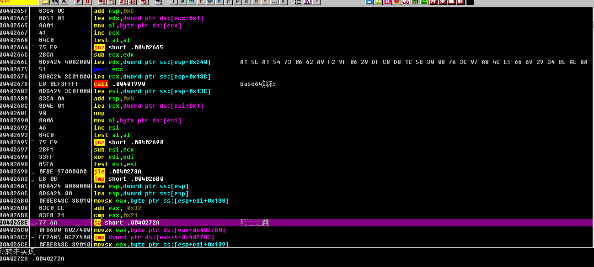
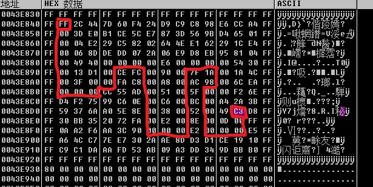

environment
后面会用到python的环境，在这里就先配好，个人用的是 python2.7 的环境，配置如下：
- 先到官网上下好python 2.7的安装包，安装。
- 用
pip install pycrypto安装加密模块，如果出现error: Microsoft Visual C++ 9.0 is required (Unable to find vcvarsall.bat). Get it from http://aka.ms/vcpython27，我们就去安装一下Windows对python的支持。 - 上述都做完之后，打开python，输入
from Crypto.Cipher import AES，如果运行没有报错，就是配置成功了。
step
做之前可以去看看大表哥的整理思路的视频，确实很厉害。
跑这道题算是我学od这么长时间以来最复杂的一个了……跑到吐血
找切入点
- 打开这道题，发现是一个checkSN，我们打开IDA查看导入地址表和函数引用，这里常用的有两个，分别是
GetWindowTextA和GetDlgItemTextA，我们初步查看后发现GetDlgItemTextA所在的地方是函数的主体，而且整体只有这一个函数，我们用od在GetDlgItemTextA下bp，f9运行。
梳理函数逻辑
- 随便输入几个字符CheckSN，在这里我输入的是“123456”。
- 一直往下跑，直到
GetDlgItemTextA函数出现。
函数往上是在初始化堆栈空间，到了下面的
call，能在内存看见输入的’123456‘以16进制放在内存中。
具体来说应该是’12 34 56‘。
- 继续跟踪，我们在00402653处进入AES解密函数。
先进行AES分组解密，密钥为B1nGzL[4st-TeAm]，IV向量16进制为000102030405060708090A0B0C0D0E0F，使用CBC模式。如果输入转成的16进制长度不是16的倍数，则分组觖密后剩下的会进行ECB模式的解密，密钥不变。 回主流程。
- 回到主流程后，得到结果进行base64解码，地址为00401990；之后进入迷宫选择，这里我们看IDA的解析会更清楚一点。
swich选择。其原值必须为"82QS"中的一个，不然就是进入default，这是一条死亡之路。 switch中的call循环做完之后，在0040273A 检查0018F1E4 是否为1，为1就game over。整理一下内存查看迷宫如下：
8,2保特横向位置不变，纵向分别随着循环向上一格和向下一格；Q，S保持纵向位置不变，横向分别向左一格和向右一格 ;c3为终点，左上ff为起点，沿着0走，路径选择结果为27S281S182S327S287S323Q124S281S1。参与运算的定值为0x2f。依据奇数位字符选择switch case，其右边的偶数位字符-0x30,结果进行累加，最后累加值就是0x2f。
- 跑完之后，发现只累加到了0x2e，还差1，那么这个1到哪里去找呢？我们打开‘s’的case，发现有一点不一样：
在00402923处，就是比较取值是否为0的，别的call检查失败直接置标志返回，这里跳到了0040293B，检查取数是否为0xFF，如果是直接返回，不置失败标记。正好到终点处右边为0xff，且S循环一次是右移一格，取数，所以最后加上S1即可。
- 此题多解原因是如果偶数为0x30，则不进行循环，0x2f累加值也为零，对最后的正确流程没有影响。所以是可以随意附加"20"、“80”、“Q0”、'S0"，从而产生多解。
解题脚本
1 | from Crypto.Cipher import AES |
结果得到flag{235cfe4e617b3656758e14ca51d981a9e5623be7424a244ae93d8a48cf9cf7f0a84649f35fdd9a47e7afef01dfc9f639}
感想
- 关于AES的识别，还是直接用IDA的插件来的比较实在，不过最好是能识别出算法的特征，就像下面这个（个人瞎猜，欢迎大佬指正）：
感觉已经有一点AES的影子了……
- 迷宫问题还是reverse中的热门问题……虽然很难……